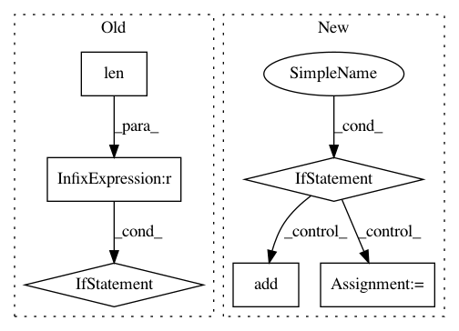

047c1206650c6524075e6509809f9810f91548d4,src/read_csv.py,,bayesdb_read_csv,#Any#Any#Any#Any#Any#Any#,40
Before Change
column_names = [unicode(name, "utf8").strip() for name in row]
if len(column_names) == 0:
raise IOError("No columns in CSV file!")
if len(unique(map(casefold, column_names))) < len(column_names):
raise IOError("Duplicate columns in CSV file.")
if create and not core.bayesdb_has_table(bdb, table):
qt = sqlite3_quote_name(table)
qcns = map(sqlite3_quote_name, column_names)
schema = ",".join("%s NUMERIC" % (qcn,) for qcn in qcns)
After Change
duplicates = set([])
for name in column_names:
name_folded = casefold(name)
if name_folded in column_name_map:
duplicates.add(name_folded)
else:
column_name_map[name_folded] = name
if 0 < len(duplicates):
raise IOError("Duplicate columns in CSV: %s" %
(repr(list(duplicates)),))
if create and not core.bayesdb_has_table(bdb, table):
In pattern: SUPERPATTERN
Frequency: 3
Non-data size: 6
Instances
Project Name: probcomp/bayeslite
Commit Name: 047c1206650c6524075e6509809f9810f91548d4
Time: 2015-08-25
Author: riastradh+probcomp@csail.mit.edu
File Name: src/read_csv.py
Class Name:
Method Name: bayesdb_read_csv
Project Name: dnouri/skorch
Commit Name: a5f83e8f1e29c62070333d6ce48009e2fdb323b9
Time: 2017-07-19
Author: benjamin.bossan@ottogroup.com
File Name: inferno/net.py
Class Name: NeuralNet
Method Name: initialize_callbacks
Project Name: osmr/imgclsmob
Commit Name: 00c06ff2b04c3c991b6fbe1281ff3eede9ca4f94
Time: 2018-10-29
Author: osemery@gmail.com
File Name: gluon/gluoncv2/models/darknet.py
Class Name: DarkNet
Method Name: __init__